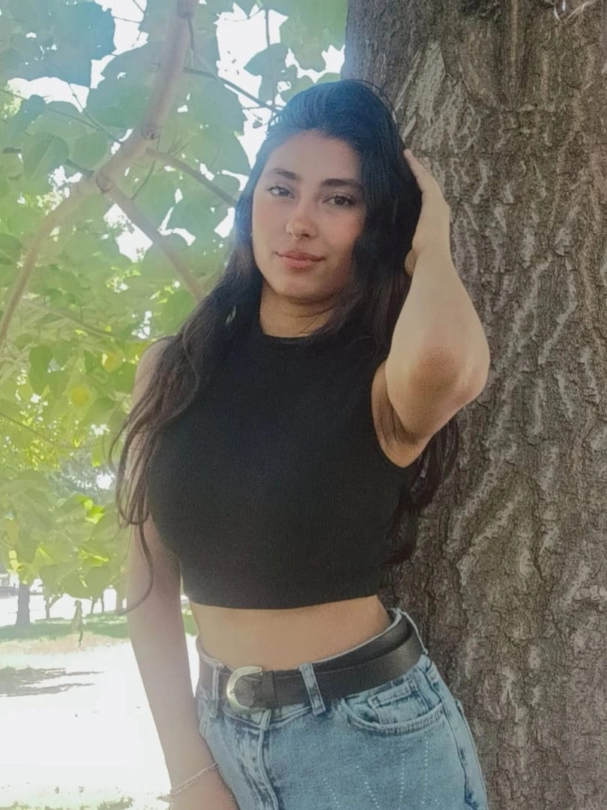
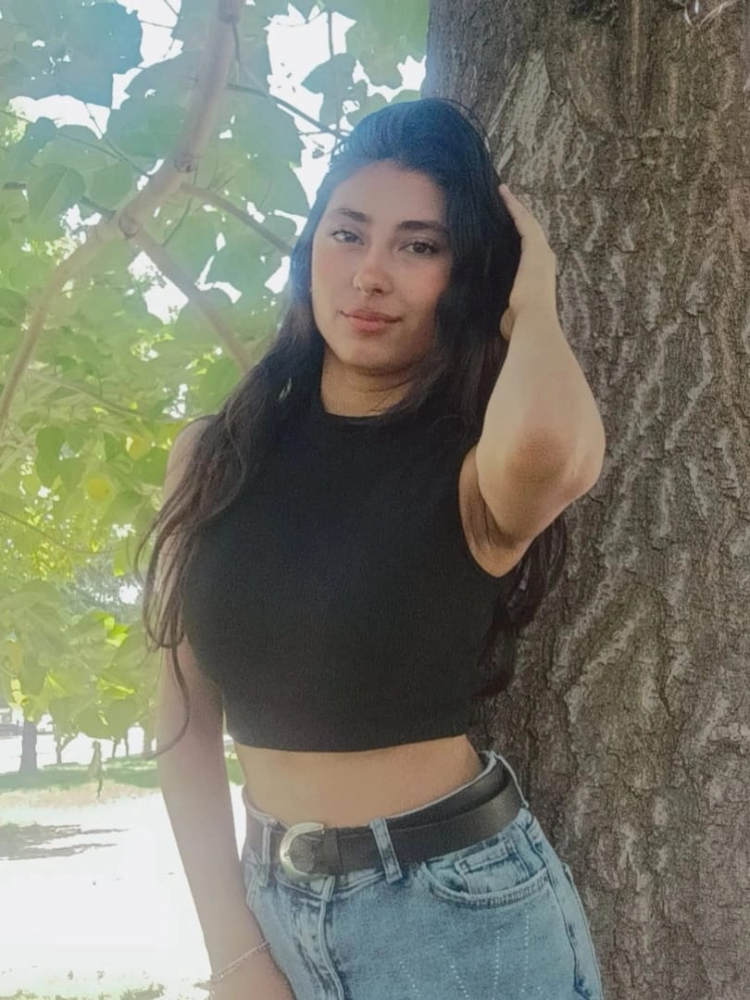

 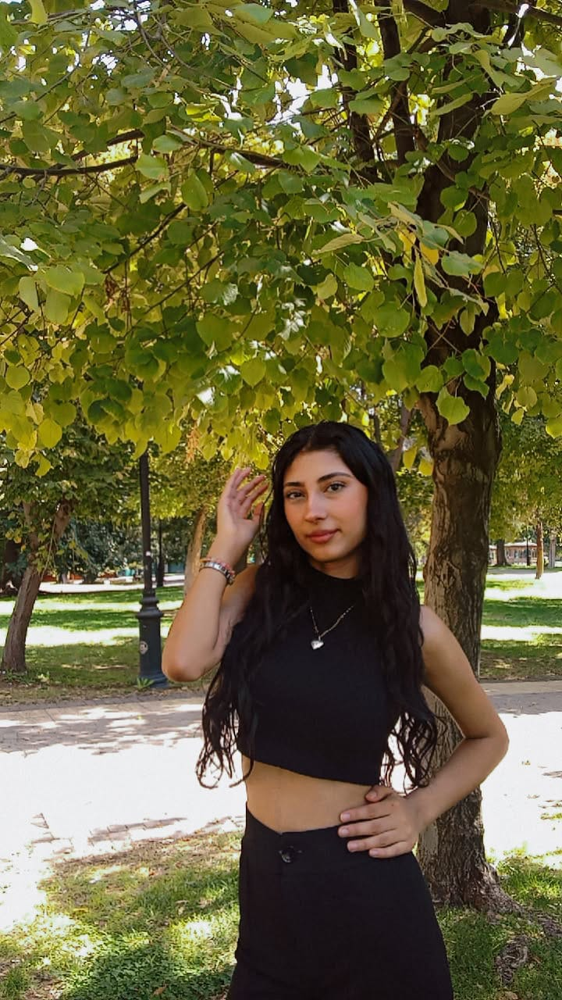
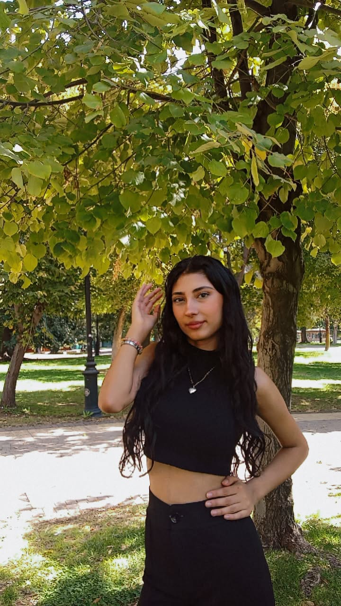
 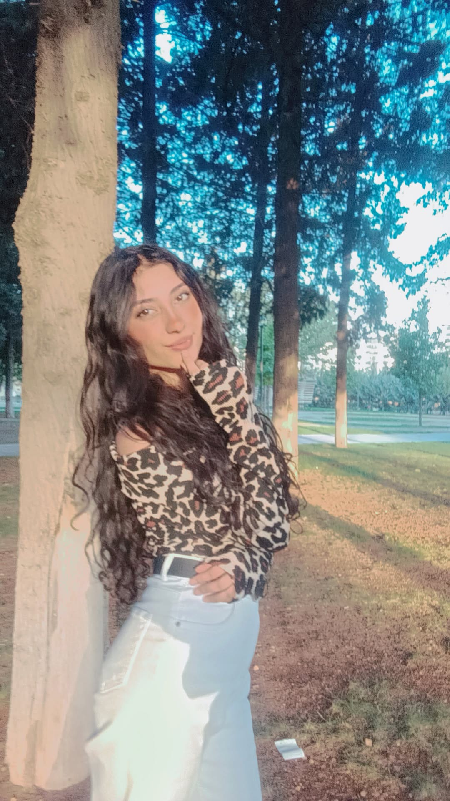
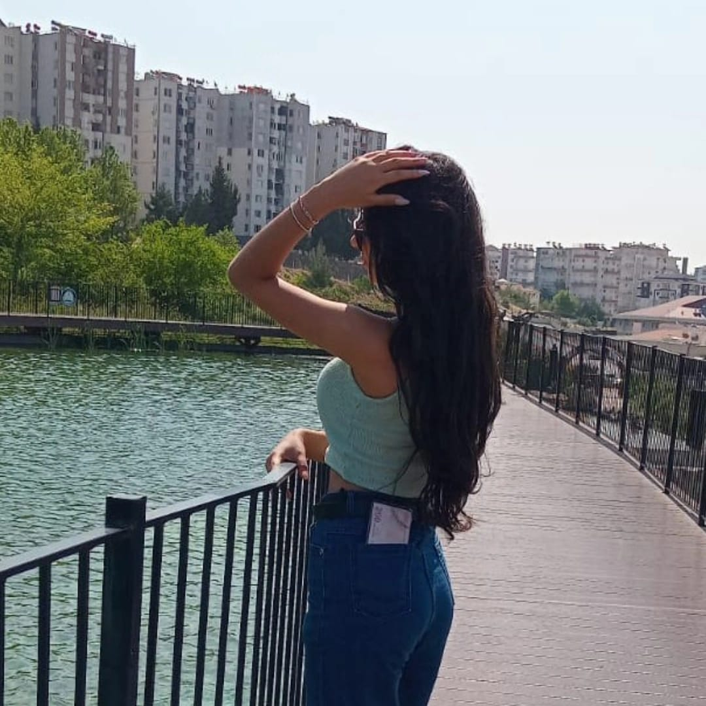
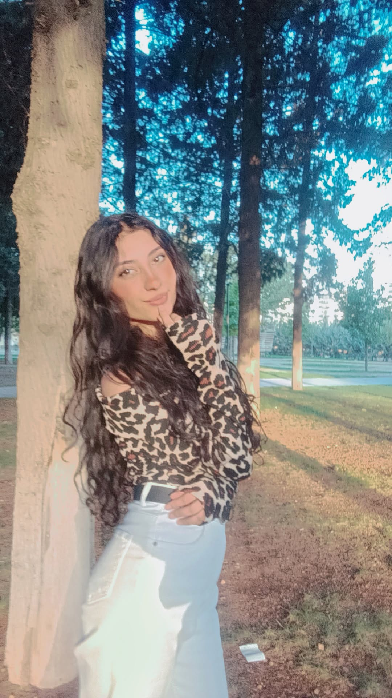
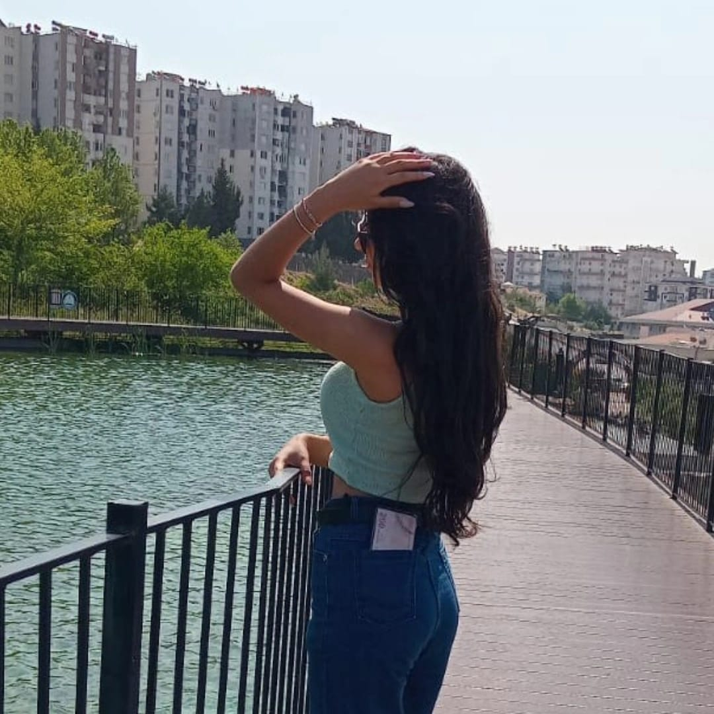
Sinem Özhan Hakkında
3 Ekim 2008’de Gaziantep’te doğan Sinem Özhan, köken olarak Adıyamanlı bir ailenin ferdi olsa da yaşamının büyük bölümünü Gaziantep’in kültürel çeşitliliği içinde geçirdi. Çocukluk döneminden itibaren teknolojiye ve üretmeye karşı yoğun bir merak duyan Sinem, yıllar içinde bu ilgisini bilinçli bir yönelim hâline getirdi.
Eğitim hayatına Gaziantep’te başlayan Sinem, teknolojiye olan tutkusunun güçlenmesiyle bilişim alanına geçiş yaparak kendini daha doğru bir yolda buldu. Bu doğrultuda, Gaziantep Şehitkamil Merveşehir semtinde bulunan Nigar Ertürk Meslek ve Teknik Anadolu Lisesinin Bilişim Teknolojileri bölümünde eğitimine devam etti.
Bugün 12. sınıf öğrencisi olan Sinem, sadece okulda değil, aynı zamanda profesyonel bir çalışma ortamında da kendini geliştirmeye devam ediyor. Yazılım ve yaratıcı düşünce alanındaki becerilerini ileri taşımak için Derin Fikirler Kreatifera Reklam Ajansı’nda staj yapıyor. Burada hem web hem mobil alanındaki projelerde aktif rol alıyor, gerçek iş deneyimi kazanarak kendi yolunu daha net çiziyor.
Sinem için teknoloji, sadece bir meslek değil; üretmenin, hayal kurmanın ve geleceği şekillendirmenin modern bir yolu. Web ve mobil geliştirmeye duyduğu ilgi, onu sürekli araştırmaya, öğrenmeye ve yeni proje fikirleri üretmeye yönlendiriyor.
Bununla birlikte Sinem’in kişiliğini tamamlayan bir başka alan da edebiyat… Özellikle şiir yazmak, onun için hem duyguların hem de içsel dünyanın en saf ifade biçimi. Şiirlerinde derinlik, samimiyet ve iç gözlem ön planda. Müziğe olan ilgisi ve seyahat etmeye duyduğu istek ise yaşamına ilham katıyor.
Hem teknik hem sanatsal yanlarını bir arada taşıyan Sinem, hayatını iki güçlü alanın birleşimiyle şekillendiriyor:
Kodun mantığı ve kelimenin duygusu…
Gelecekte yazılım alanında profesyonelleşmeyi hedefleyen Sinem, bir yandan da kendi iç dünyasını şiirleriyle anlatmayı sürdürüyor. Yeniliklere açık, meraklı ve üretken yapısıyla hem teknoloji hem sanat dünyasında kendine özgü bir yer edinmeyi amaçlıyor.
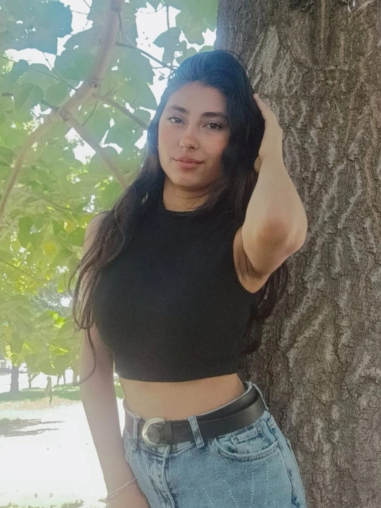
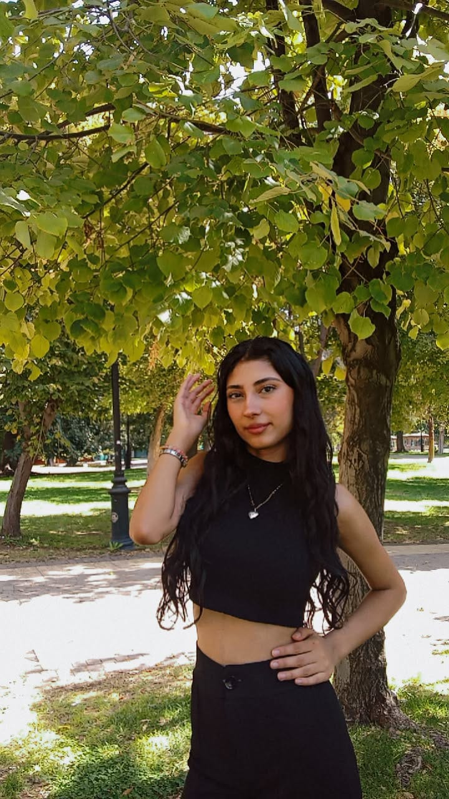
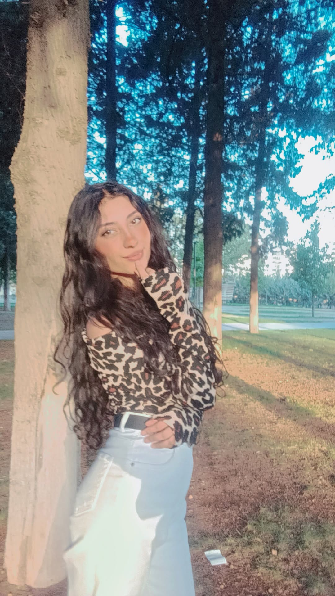
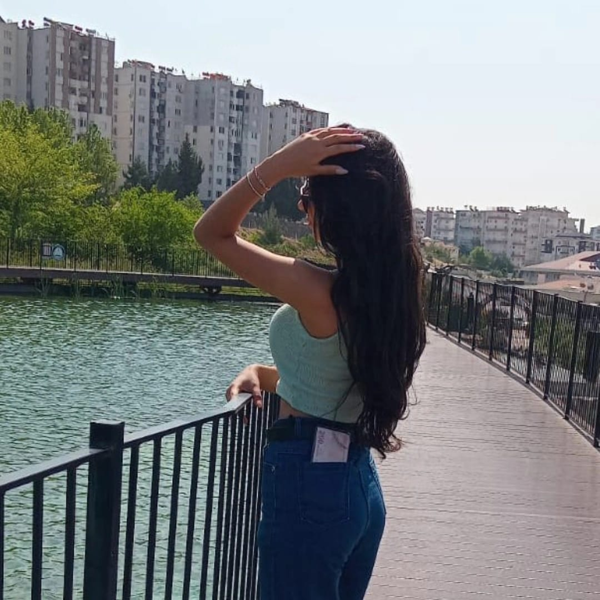
Başaramamanın bedelini bir ömür ödeyemeyenler,
başaramamanın bedelini bir ömür öderler.
Sinem Özhan